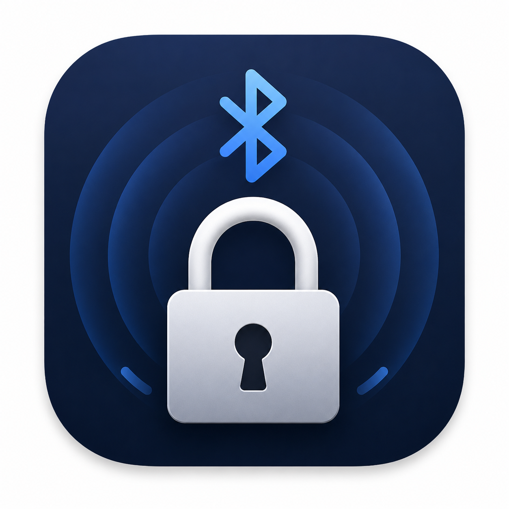

Known devices only
Choose from Bluetooth devices already paired or known to your Mac.

AwayLockFree macOS menu bar app
AwayLock watches a paired Bluetooth device and locks your Mac when the signal disappears or becomes weak for too long.

Built for everyday use
Choose from Bluetooth devices already paired or known to your Mac.
Uses averaged Bluetooth signal strength with configurable timeout and threshold.
Locks the current macOS session instead of simply turning off the display.
Pause monitoring, lock now, inspect logs, and tune settings from a compact popover.
Privacy first
AwayLock scans local Bluetooth LE advertisements and stores settings locally. It does not upload device names, identifiers, RSSI values, logs, or preferences to any server.
Read the privacy noteGet started